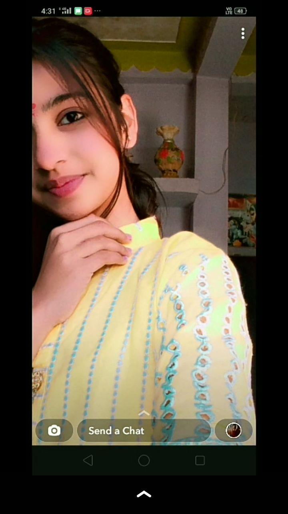
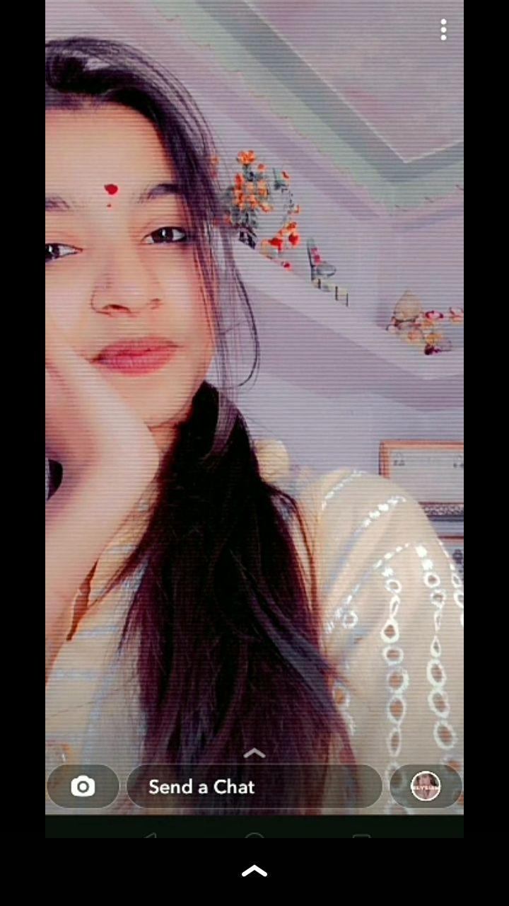
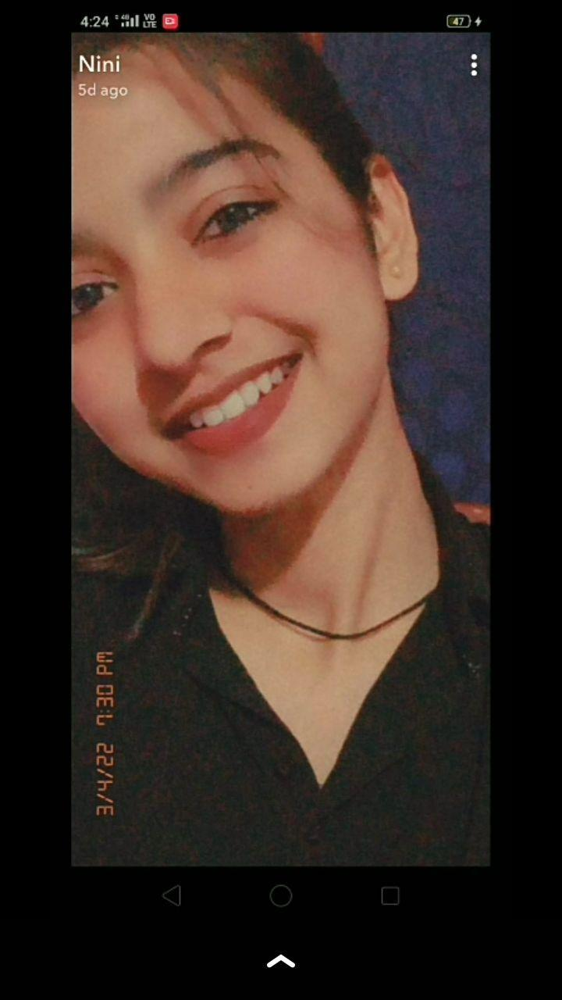
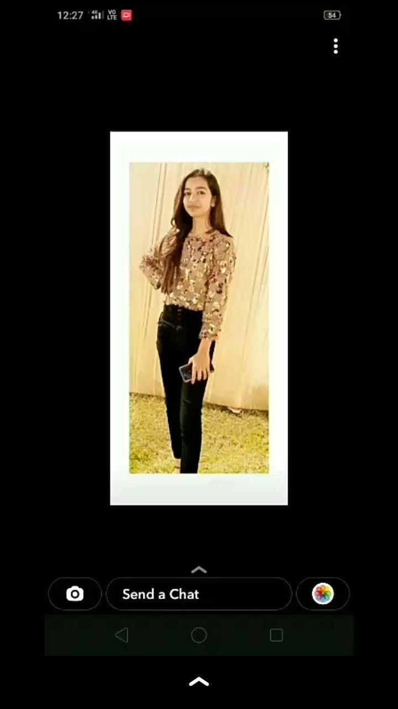
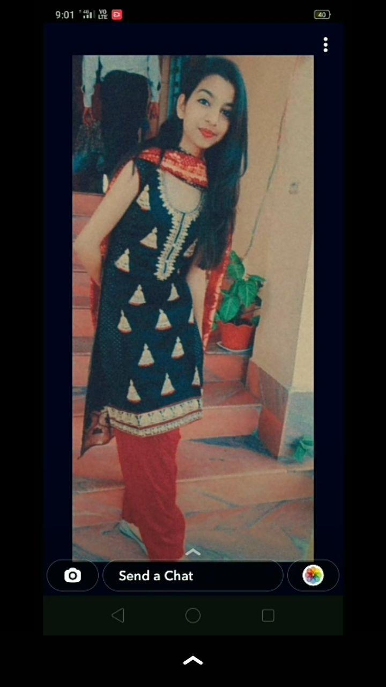

a note from the heart
For Nainsi
Ek chhoti si website, ek bada sa dil
scroll to reada letter, honestly
My dearest Nainsi,
I've started this letter about a dozen times now, and every time my heart has gotten in the way of my words. But I can't keep it inside any longer, so I'm just going to write it the way it feels.
I'm sorry. Truly, deeply sorry.
I walked away from the most beautiful thing I had, and I did it for reasons that seem so small and foolish now. I was scared — scared of messing things up, scared of the moment where we'd finally be face to face and I wouldn't know what to say, scared that the girl I'd built up in my heart might not feel the same when she saw me in person. So instead of showing up, I hid. And in hiding, I hurt you. That was never my intention, and I'll carry that regret for a long time.
But here's the truth I should have had the courage to say all along: I have feelings for you. Real, deep, overwhelming ones. The kind that keep me awake at night and make me smile at my phone like an idiot when your name lights it up. I fell for your laugh, your mind, the way you see the world. I fell for you — and I was too afraid to let you see how much.
I miss you. God, I miss you. I miss the way our conversations made my day better without fail. I miss knowing you were a message away. I miss the idea of you — and the reality of you even more. There isn't a day that goes by that I don't wonder what it would have been like if I'd just had the courage to show up, to take you on that date, to look into your eyes and tell you everything I'm telling you now.
I know I don't deserve a second chance just because I'm asking for one. But I'm asking anyway — not because I think I've earned it, but because what I feel for you is too real to let go of without trying everything I have.
If you'd let me, I'd love the chance to make it right. A coffee, a walk, a proper date — whatever you're comfortable with. I'll show up this time. I promise you, I will show up.
Whatever you decide, I need you to know this: you were never the problem. You were the best thing that happened to me, and I let my own fear take you away. That's on me. And I'm sorry.
With all my heart,
Your monkey 🥀
Ughh, one more thing — do you remember the first poem I sent you a year ago? Here it is…
And trust me I am not trying to convince you to get back together... It's just a regret or a weight on my chest that's why I have written all this nonsense....
Just letting you know that you were my first and I also want you to be my last.... Baaki samjhdar ko ishara hi kaafi hai aur tum bohot samjhdar ho I know .... Jo bhi decision logi vo best hi hoga ....
A few little glimpses of you





Pehli Poem
Jo maine aaj tak sambhaal rakhi hai
तेरी बातों का मुझसे बात करना और तेरी आंखों का मुझसे शर्माना,
मुझसे अच्छा लगता है।
तेरे चेहरे को शाम ढलने तक नया सवेरा आने तक देखना
मुझे अच्छा लगता है।
तेरी जुल्फों को तेरे चेहरे को ढकते हुए देखना,
तेरे ढके चेहरे से तेरा मुझको देखना मुझे अच्छा लगता है।
ये तारों का तेरी खूबसूरती से मुकाबला करना,
और बेचारों का आसानी से हार जाना, मुझे अच्छा लगता है।
तेरी गोद से इस त्रस्त दुनिया की मार्मिकता को
और सीमितता को असीमितता से देखना मुझे अच्छा लगता है।
ये पेड़, ये धारा, ये फूल, ये हवा सबका तेरे आगे
कोमलता से झुकना और तेरा इन्हें कायल करना, मुझे अच्छा लगता है,
और तेरा मुझको मेरी ही नजरों से देखना
मुझसे सबसे अच्छा लगता है 💌
No pressure. Just the truth, with all the care it deserves.